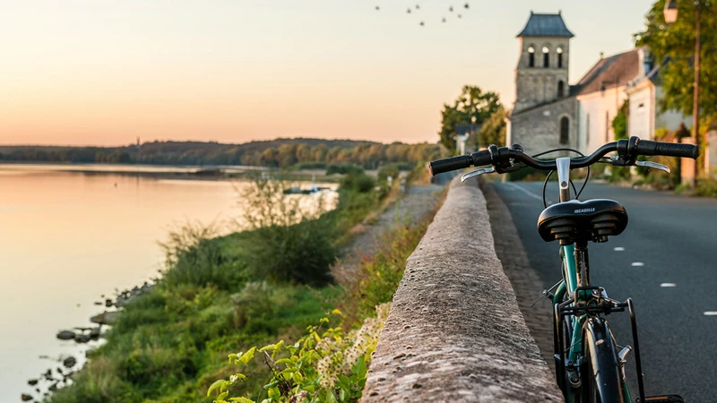

La Loire à Vélo
Parcourez les 900 km de pistes cyclables aménagées le long de la Loire. L'itinéraire passe à proximité des Palombes, offrant une balade accessible à tous les niveaux.
En savoir plusBienvenue au cœur du Val de Loire ! Situé à La Ménitré, entre Angers et Saumur, l'éco-lieu Les Palombes vous offre un point de départ idéal pour explorer cette magnifique région classée au patrimoine mondial de l'UNESCO. Découvrez une multitude d'activités et de sites d'exception à proximité.
Parcourez les 900 km de pistes cyclables aménagées le long de la Loire. L'itinéraire passe à proximité des Palombes, offrant une balade accessible à tous les niveaux.
En savoir plusDécouvrez la Loire autrement à bord d'une toue cabanée, bateau traditionnel ligérien. Admirez les paysages et la faune depuis le fleuve.
Réserver une baladeDe nombreux sentiers de randonnée vous permettent d'explorer la richesse naturelle de la région. Parcourez les bords de Loire, les forêts et les coteaux viticoles.
Découvrir les itinérairesPartez à la découverte des vignobles de la région et dégustez les vins d'Anjou-Saumur. De nombreux domaines proposent des visites et dégustations.
Explorer les domainesLa Loire et ses affluents regorgent de poissons. Amateurs de pêche, n'oubliez pas votre matériel pour une journée détente au bord de l'eau.
Informations pêcheDécouvrez les produits du terroir sur les marchés de la région. Fruits, légumes, fromages et spécialités locales vous attendent pour régaler vos papilles.
Calendrier des marchésSurplombant la Loire, ce château du XIVe siècle ressemble à un château de conte de fées avec ses tours élancées. Il abrite aujourd'hui un musée des arts décoratifs.
Plus d'informationsLa plus grande cité monastique d'Europe, abritant les gisants d'Aliénor d'Aquitaine et de Richard Cœur de Lion. Un lieu chargé d'histoire à ne pas manquer.
Plus d'informationsForteresse du XIIIe siècle abritant la tapisserie de l'Apocalypse, chef-d'œuvre médiéval unique au monde de 104 mètres de long.
Plus d'informationsUn zoo unique creusé dans le tuffeau, roche calcaire de la région. Découvrez plus de 1200 animaux dans un cadre troglodytique exceptionnel.
Plus d'informationsÉcole française d'équitation de renommée mondiale, le Cadre Noir propose des visites guidées et des représentations équestres impressionnantes.
Plus d'informationsDécouvrez l'habitat creusé dans la roche, typique de la région. Visitez les caves, restaurants et hébergements troglodytes pour une expérience unique.
Plus d'informations